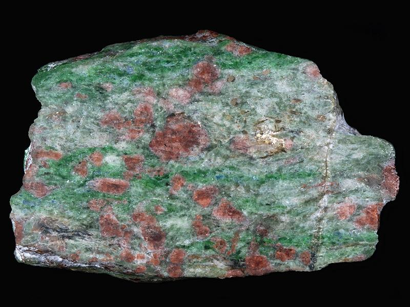

On écrit un document HTML dans un éditeur de texte classique. Il permet de présenter de manière sémantique les données de type texte, image ou vidéos et il est structuré par des balises.
Une balise est présentée entre chevrons : <balise> Il existe deux formes de balises :
La structure minimale d'un document HTML est de la forme suivante :
<! doctype html> <!--cette ligne précise quel langage HTML est utilisé (HTML5 ici)--!>
<html> <!--pour commencer le document--!>
<head> <!--l'en-tête du document--!>
<meta charset="utf-8" /> <!--pour choisir le code d encodage UTF8--!>
<title> Un titre </title> <!--il faut absolument un titre !--!>
</head>
<body> <!--et le corps du document--!>
</body>
</html>
Pour structurer la page web on peut ajouter entre les balises <body> et </body> plusieurs éléments :
Les titres doivent être écrits entre les balises de type <hn> où n est un chiffre compris entre 1 et 6 inclus. Ce chiffre indique le niveau d'imbrication du titre. On distingue ainsi :
Il peut y avoir plusieurs titres de niveau inférieur après un titre de niveau supérieur. Par exemple, on peut insérer deux titres de niveau 2 suite à un titre de niveau 1. Par contre, il faut veiller à conserver l'ordre d'imbrication des titres et ne pas insérer un titre de niveau 2 avant un titre de niveau 1 par exemple.
Il est très facile d'insérer un paragraphe dans une page web en utilsant les balises <p> et </p> Par exemple on note :
<p> On écrit un premier paragraphe juste pour l'exemple même si on n'a pas grand chose à dire </p>
<p> Et on rajoute un second paragraphe dans lequel on ne raconte toujours rien d'intéressant ! </p>
et on obtient :
On écrit un premier paragraphe juste pour l'exemple même si on n'a pas grand chose à dire
Et on rajoute un second paragraphe dans lequel on ne raconte toujours rien d'intéressant !
Il se peut que vous ayez besoin de mettre en valeur certains mots, phrases ou paragraphes pour la compréhension sémantique de votre contenu. Dans ce cas vous pouvez utiliser trois balises <mark> </mark>, <em> </em> et <strong> </strong>. Voici un exemple d'utilisation :
<p> Voici un paragraphe dans lequel il y a des mots importants que l'on veut mettre en évidence :
on a d'abord un mot <mark> important </mark>,
puis un mot <em> très important </em> ,
et enfin un mot <strong> très très important ! </strong>
<p>
On obtient :
Voici un paragraphe dans lequel il y a des mots importants que l'on veut mettre en évidence : on a d'abord un mot important ;, puis un mot très important ; et enfin un mot très très important !
On distingue les listes ordonnées, les listes désordonnées et les listes de définitions.
Elles permettent de présenter des éléments qui sont numérotés. Elles doivent être décrites entre les balises <ol> et </ol> et chaque élément listé doit être indiqué entre les balises <li> et </li>.
Voici un exemple :
<ol>
<li> ligne 1 </li>
<li> ligne 2 </li>
<li> ligne 3 </li>
</ol>
On obtient:
Elles permettent de présenter des éléments avec des puces. Elles doivent être décrites entre les balises <ul> et </ul> et chaque élément listé doit être indiqué entre les balises <li> et </li>.
Voici un exemple :
<ul>
<li> une ligne </li>
<li> une autre ligne </li>
<li> et encore une </li>
</ul>
On obtient:
Les listes de définition, comme leur nom l'indique, permettent de présenter des termes et leur(s) définition(s). Elles doivent être décrites entre les balises <dl> et </dl> , chaque terme listé doit être indiqué entre les balises <dt> et </dt> et les définitions entre les balises <dd> et </dd>. Il peut y avoir plusieurs termes pour une définition et/ou plusieurs définitions pour un terme.
Voici un exemple :
<dl>
<dt> un terme </dt>
<dd> une definition </dd>
<dd> et une autre definition pour le même terme </dd>
<dt> un deuxieme terme </dt>
<dd> et une deuxieme definition <dd>
</dl>
On obtient:
Il existe certaines balises qui permettent de distinguer clairement votre contenu d'informations annexes utiles mais non indispensables à la compréhension sémantique de votre discours. Ces informations annexes sont généralement affichées sur votre page web dans différents espaces dédiés. On distingue ainsi :
Les liens hypertext permettent de lire un document (en l'occurence notre page web) de manière non-linéaire. On peut faire des liens vers un autre site web, une autre page du même site ou vers une section ou un article de la page. Il faut indiquer le lien de la façon suivante <a href="adresseDeLaPageALier"> le texte sur lequel il faudra cliquer </a>. Il faut eviter les accents et les espaces dans l'adresse de la page. Voyons un exemple pour vous diriger vers un site très sérieux.
<a href="https://romaing44.github.io/essaie_page.html"> Si vous aimez les chats ET les sabres lasers... </a>
Ce qui donne :
Si vous aimez les chats ET les sabres lasers...
Pour indiquer où afficher la ressource liée, on peut utiliser l'attribut "target" associé à l'un des mots-clés suivants :
Par exemple, on peut ouvrir le site mentionné précédemment dans un nouvel onglet grâce à la commande <a href="https://romaing44.github.io/essaie_page.html" target="_blank"> Pour revoir à l'infini ce chef d'oeuvre !</a>
On peut faire des liens vers une autre page de notre site web en indiquant tout simplement le nom du fichier html associé. Eventuellement, si la page est rangée dans un autre sous-dossier, on rajoute dans le href l'adresse relative du fichier visé.
Enfin, si on veut faire un lien vers une section ou un article dans la même page, il faut d'abord lui attribuer un identifiant. Par exemple, pour renvoyer à l'introduction de cette page, on l'insère dans un section très originalement intitulée introHTML grâce à la balise <section id="introHtml"> notre introduction blabla </section>. L'identifiant doit être sans accent et sans espace pour éviter les erreurs. On propose ensuite au lecteur de cliquer <a href="#introHtml"> sur le texte de notre choix </a> pour y accéder, par exemple en cliquant ici .
Peut-être qu'à un moment donné vous aurez une envie irrésistible d'ajouter une photo de chat dans votre site web. Dans ce cas, rien de plus simple ! Il vous suffit d'enregistrer votre image dans le dossier de votre site web sur votre ordinateur, puis d'insérer cette image grâce à la balise <img src="adresseDeLImage" alt="DuTexte">. Pour l'attibut "src" il faut renseigner le nom (et l'adresse relative si nécessaire) de l'image (sans espace et sans accents si possible) et pour l'attribut "alt" il faut ajouter un texte au cas où l'image ne s'afficherait pas.
Personnellement je n'ai pas une passion dévorante pour les chats mais j'aime beaucoup les cailloux alors j'ai choisi une superbe image d'éclogite (oui oui !) que je vous affiche grâce à la commande <img src="eclogite.jpg" alt="Dommage pour vous, l'image ne s'affiche pas">
La voici :
PS : si vous ne savez pas ce qu'est une éclogite, je vous invite à combler ce manque rapidement. Ceci est tout aussi indispensable que de savoir écrire du HTML5 !
Un tableau en HTML est défini par un ensemble de lignes qui contiennent des cellules. La notion de colonne n'existe pas. Chaque ligne peut donc avoir un nombre différent de cellules. Le tableau doit être insérer entre les balises <table> et </table>. Entre ces balises on intègre chaque ligne entre les balises <tr> et </tr> et chaque cellule entre <td> et </td>
Par exemple, pour insérer un tableau ayant deux lignes contenant chacune 2 cellules, avec A et B dans la première ligne et C et D dans la seconde ligne, on écrit :
<table>
<tr>
<td> A </td>
<td> B </td>
</tr>
<tr>
<td> C </td>
<td> D </td>
</tr>
</table>
On obtient :
| A | B |
| C | D |
Pour faire un tableau un peu plus complexe (à l'écriture mais qui facilitera la lecture bien sûr !), on peut y ajouter une en-tête et/ou un pied de tableau. L'entête et le pied s'insèrent entre les balises du tableau et sont marqués par les balises <thead> </thead> pour l'en-tête et <tfoot> </tfoot> pour le pied. Chaque ligne de l'en-tête et du pied doivent être intégrées entre les balises <tr> et </tr> et chaque cellule entre <th> et </th>. En général, on écrit l'en-tête et le pied au début dans le code mais ils s'afficheront effectivement à leur place sur la page web, à savoir en haut et en bas du tableau.
Voici l'écriture du tableau précédent avec en plus, une en-tête et un pied de tableau
<table>
<thead> <!--en-tête--!>
<tr>
<th> Nom </th>
<th> Prenom </th>
</tr>
</thead>
<tfoot> <!--pied--!>
<tr>
<th> Fin </th>
<th> Fin </th>
</tr>
</tfoot>
<tr> <!--corps--!>
<td> A </td>
<td> B </td>
</tr>
<tr>
<td> C </td>
<td> D </td>
</tr>
</table>
On obtient :
| Entête1 | Entête2 | |
|---|---|---|
| Pied1 | Pied2 | |
| A | B | |
| C | D |
On peut aussi créer des cellules plus grandes que celles définies dans le tableau à la base. Par exemple, on peut créer une cellule qui va prendre la place de n cellules sur une même ligne. On rajoute alors un attribut à <th> ou <td> (selon si on se trouve dans l'en-tête, le pied ou le corps du tableau) et on écrit le contenu de la cellule entre les balises <th rowspan n> </th> ou <td rowspan n> </td>. Si on veut créer une cellule qui va prendre la place de n cellules sur une même "colonne" on écrit le contenu de la cellule entre les balises <th colspan n> </th> ou <td colspan n> </td>.
Comme on n'est pas des sauvages, on va aussi rajouter une légende à notre tableau entre les balises <caption> et </caption>. Attention ! Il faut impérativement insérer les balises "captions" juste après la balise "table" sinon vous aurez à faire à un bugg pas sympa du tout !